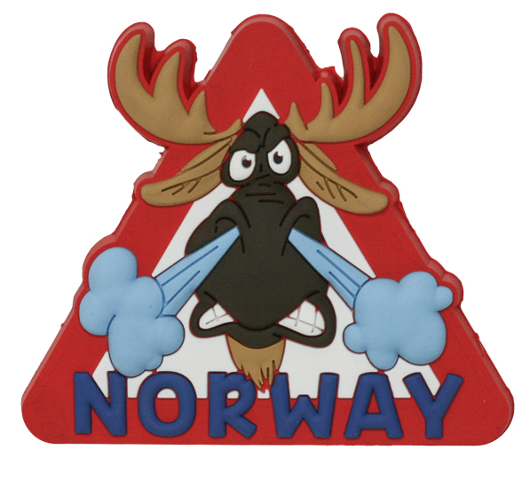

Du har helt sikkert opplevd det; du er ute å nyter frisk luft, lar tankene sveve mens du nynner på en god
trøndersk vise - plutselig helt ute av intet står du foran en
drapsmaskin på fire ben og gevir. På denne siden har jeg samlet de nyttigste knepene man kan ha med seg i møtet med skogens konge.
En viden spredt misforståelse er at Elgen stanger sine ofre med geviret. Dette mefører på ingen måte riktighet. Elgen sparker eller stamper med forbeina.
